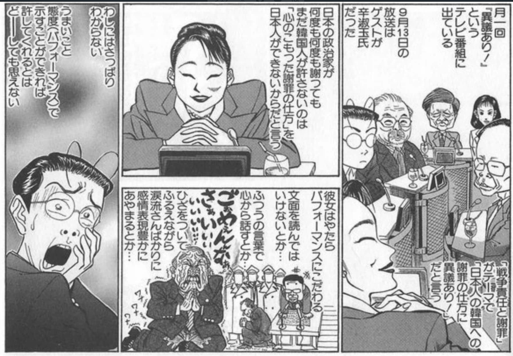
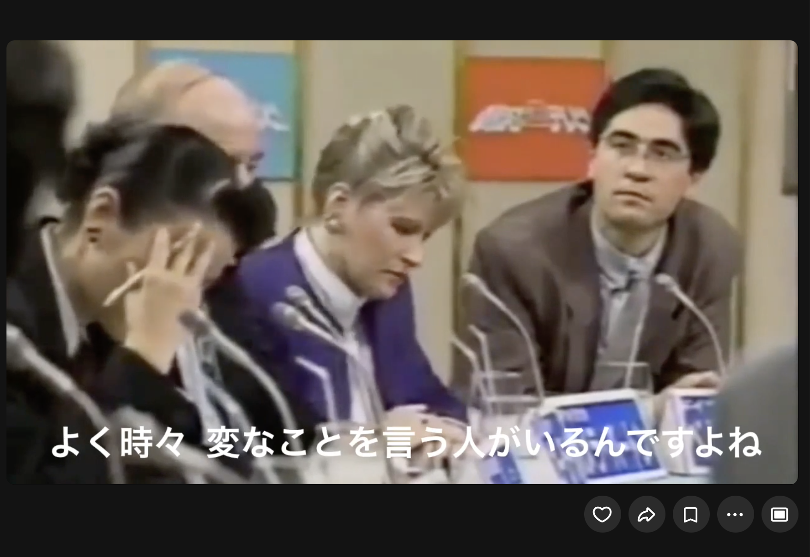
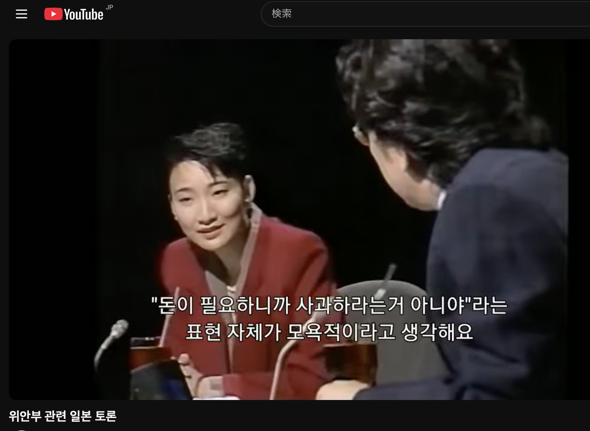

第18回論考（第3章）
辛淑玉신숙옥の変遷：小林よしのりと西尾幹二に論破されドイツ比較放棄に至る過程：イ・イルハ監督の視点から考える
著者：朴順子（Pak Junko）
公開日：2025-4-25
最終更新：2026-08-25
【執筆時期について】
本稿は2025年に執筆したもので、『ホルモン』公開前の情報に基づいています。映画に関する記述には、公開前の予測・考察が含まれます。
【要旨】
1990年代から2000年代、日本のテレビメディアで保守派論客と激しい火花を散らした辛淑玉氏。近年、当時の討論動画が韓国語字幕付きで拡散され、韓国では彼女を「エレガントなヒロイン」として称賛する声が相次いでいる。しかし、その華やかなイメージの裏には、知られざる「敗北の歴史」と大きな戦略転換があった。
本記事では、以下の3つのフェーズから彼女の変遷を辿る。
1994年：西尾幹二氏による論理的圧倒――「ドイツのように謝罪しろ」という主張が論理的に崩され、精神的試練を味わった「沈黙の敗北」。
1999年：小林よしのり氏との対決――韓国で「完璧」と絶賛される赤いスーツの勇姿。しかし本人と目撃者が語る、テーブルに突っ伏すほどの「ボロ負け」の実態。
2000年：ドイツ比較の放棄
――長年の主張をなぜ撤回したのか？敗北の末に辿り着いた「主戦場」の選別。さらに、2025年公開予定のドキュメンタリー映画『ホルモン』（イ・イルハ監督）がもたらすであろう「美化された象徴」と、過激発言を知る日本側の「冷ややかな視線」のギャップを分析。切り抜き動画が作り出す「虚像」と、現実の「言説」が乖離していくメカニズムを構造的に解明する。
はじめに
20数年を経て韓国人の間で注目を集めた切り抜き動画がある。
赤いスーツを着た辛淑玉の冷静な姿が韓国語字幕付きの切り抜き動画として拡散され、「完璧だ」と評価されている。
「위안부 관련 일본 토론」
1999年9月13日の辛淑玉、小林よしのり、佐高信が出演したテレビ朝日『異議あり！』
三者とも後日、この日のことを以下のように書き記しており、印象深い戦いだったことが伺える。

辛：私が宋さんのことをちゃんとやろうと思ったのは、ある討論番組でボコボコにやられたことがあったからなんです。
梁澄子（ヤンチンジャ）×辛淑玉（シンスゴ）「慰安婦」サバイバー宋神道（ソンシンド）さんとの思い出を語る（前編）
保守派の男性から「（「慰安婦」運動は）金目当でしょ」みたいなことを言われて、私なりに一所懸命反論したつもりだったけど、ボロ負けしたんです。
収録が終わっても立てなくて、スタジオでつっぷして泣いちゃった。泣いて泣いて、宋さんの顔がいっぱい頭に浮かんだんです。「バカはだめだ。闘いきれない。勉強しなくちゃ」と思って、そこから少しずつ戦時性暴力の問題を勉強し始めたんです。
田原総一朗が司会をするテレビ朝日の「異議あり！」という番組に一緒に出た時、小林よしのりが、
【憲法を求める人々】辛淑玉 佐高信｜2018年10月1日6:30PM
「従軍『慰安婦』だったと名乗り出た人たちは、結局おカネが欲しいんでしょ」
と自らの卑しさをさらけだすようなことを言った。それに対し、
「それはあまりに人間を侮辱した言い方でしょう」
と辛は煮えくり返るような胸中の思いを抑えて静かに反論したが、終わった後、うまく援護できなかったことを詫びたらテーブルに突っ伏した。以来私は辛を泣かせた男になっている。
在日コリアン3世の辛淑玉は、1990年代から2000年代初頭にかけて、日本のメディアで歴史認識や差別問題について発言し、注目を集めた活動家である。彼女の討論姿勢は、特に1994年から2000年にかけて大きな変遷を見せる。
1994年、保守派の論客・西尾幹二との討論で「ドイツのように謝罪しろ」と主張したが、論理的な反論に直面し、完全に言い負かされた。この敗北は彼女の主張の限界を露呈させ、精神的負担を与えた。
その後、1999年の小林よしのりとの対決では、感情を抑えた上品な姿勢で韓国を擁護し、韓国人視聴者から「エレガント」と称賛されたが、実際には論破されており、彼女自身「ボロ負け」と感じていた。
最終的に2000年、彼女は「ドイツとの比較はやめた方がいい」と主張を撤回し、討論スタンスを転換した。
本稿では、辛淑玉の討論姿勢の変遷を「西尾幹二に論破される→小林よしのりと対決→ドイツとの比較放棄」という時系列で分析し、特に日本ではあまり知られていない「ドイツとの比較放棄」の意義を掘り下げる。彼女の発言とその変容を通じて、日韓の認識ギャップと歴史的意味を再検討する。
本論文の主な資料として、以下の動画を使用した。
- 韓国語字幕付きの切り抜き動画 「위안부 관련 일본 토론」
- 韓国語字幕なしの切り抜き動画 「小林よしのりvs辛淑玉 韓国に対する謝罪で議論part1」
- 韓国語字幕なしの切り抜き動画 「小林よしのりvs辛淑玉 誠意ある謝罪、従軍慰安婦で議論part3」
- 西尾幹二氏に論破される辛淑玉の動画 「西尾幹二氏 反日派を完全論破 辛淑玉氏、反論できず」
- 辛淑玉の過激発言を記録した動画 「2016年9月9日「ないちゃー大作戦！全員集合！！」」
なお、当時の番組全体を視聴できないため、切り抜き動画と本人らの書籍（辛淑玉と西尾幹二の著作）から推測した分析となる。
さらに、イ・イルハの『ホルモン』（2025年4月30日から開催される全州国際映画祭で上映予定）が公開された場合の影響を予測し、現代の日本での受け止め方とのギャップを考察する。切り抜き動画による印象の違いと日韓の立場の違いによる評価の差を探り、過去の活動家が異なる文化圏でどう受け止められるかを分析する。
1. 辛淑玉の討論における変遷：西尾幹二に論破される、小林よしのりと対決、ドイツとの比較放棄まで
1.1 西尾幹二に論破される：論理的な弱さと精神的試練（1994年）

辛淑玉の討論姿勢の変遷は、1994年の西尾幹二との討論から始まる。ドイツ文学者で保守派の論客である西尾は、「新しい歴史教科書をつくる会」の初代会長を務め、論理的かつ資料に基づいた反論を得意とした。
辛淑玉が「ドイツのように謝罪しろ」と主張したのに対し、西尾は「ドイツと日本は状況が異なる」「ホロコーストと日本の植民地支配は比較にならない」と反論。
彼女の感情的な訴えは通用せず、切り抜き動画（「西尾幹二氏に論破される辛淑玉の動画」）では、辛淑玉が黙り込んで顔を上げられない様子が映し出されている。
この討論は、彼女の論理的な弱さを露呈させ、視聴者に「論破された」という印象を与えた。辛淑玉自身も自著で「何度も泣いた」「辞めたいと訴えた」と述べており、精神的負担が大きかったことが伺える。
当時の視聴者反応は、番組全体が視聴できないため推測に頼るが、多様な意見があったと考えられる。
一部からは「辛淑玉がかわいそう」「よく頑張った」と同情の声が上がった可能性があるが、西尾の論理的な優位性が際立ち、彼女の主張の限界が明確になった。
この敗北は、後の討論姿勢に大きな影響を与え、特に感情を抑えた議論への意識を強めたと考えられる。韓国ではこの動画に韓国語字幕がついておらず、ほとんど知られていないため、彼女の敗北は日本国内でのみ語られている。
1.2 小林よしのりと対決：韓国人から見た「エレガントで上品」な辛淑玉（1999年）

小林よしのり「結局お金でしょ？」
辛淑玉「お金が欲しいからだろ、という言い方は、あまりにも人間を侮辱した言い方」
西尾との討論から5年後の1999年、辛淑玉はテレビ朝日『異議あり！』で小林よしのりと対決した。
この討論は、近年になって韓国語字幕付きの切り抜き動画（「위안부 관련 일본 토론」）がYouTubeで拡散され、韓国で再評価されている。
赤いスーツを着た辛淑玉は、「真摯な謝罪が必要だ、金じゃない」と訴え、在日コリアンとしての視点から韓国の立場を擁護。
彼女は自著『在日コリアンの胸のうち』で、「朝鮮人はバカで、女は感情的というステレオタイプを助長したくない」と述べており、西尾との討論での敗北を踏まえ、感情を抑えた上品な姿勢を強く意識した。
動画では小林よしのりのマナーの悪さ（話を遮るなど）が目立ち、辛淑玉の冷静さが際立っている。韓国人視聴者から「綺麗で完璧」（YouTubeコメント欄）と称賛され、ヒロイン像が形成された。
しかし、実際には辛淑玉はこの討論で明確に論破され、彼女自身「ボロ負け」と感じていた。
佐高信の証言（『週刊金曜日』2018年10月1日号）によると、小林が「慰安婦だったと名乗り出た人たちは結局おカネが欲しいんでしょ」と発言したのに対し、辛淑玉は「それは人間を侮辱した言い方」と反論したが、番組終了後にテーブルに突っ伏してしまった。
佐高は「以来私は辛を泣かせた男になっている」と述べており、彼女の精神的負担が明らかだ。西尾との討論で受けた論理的敗北が、彼女に感情抑制を意識させつつも、論理的な勝利を収めるのは難しかった。
日本では、彼女の上品な態度は好意的に受け止められた可能性が高いが、慰安婦問題への主張には歴史認識の違いから反発もあった。この対決は、韓国で「かっこいい」イメージを確立した一方、辛淑玉自身にとって精神的試練を重ね、論理的限界を再確認する出来事だった。
1.3 ドイツとの比較の放棄：論破と対決の影響と方向転換（2000年）
1994年の西尾との討論と1999年の小林との対決を経て、辛淑玉は2000年に大きな転換を迎えた。『リアル国家論』で彼女は以下のように述べている。
もう、ドイツと日本を比べるのはやめたほうがいい。比べるべきなのは被害者の側、フランスやイスラエルと、韓国、台湾、中国といったアジアの国々です。
宮台真司『リアル国家論』p126
この発言は、西尾との討論で「ドイツとの比較」の限界を突きつけられ、小林との対決で論理的な勝利を得られなかった経験の集大成と考えられる。
西尾の「ドイツと日本は状況が違う」という反論が彼女に強い印象を残し、感情的な訴えだけでは主張が通らないことを自覚させた。小林との対決でも、精神的負担を抱えつつボロ負けを喫したことで、彼女は「ドイツとの比較」が効果的でないと悟った。
さらに、ドイツの歴史認識がホロコーストに偏り、他の戦争犯罪（例：東部戦線での慰安婦制度）が十分に議論されていない実態を知ったことも影響した可能性がある。
辛淑玉の精神的負担は大きく、自著で「何度も泣いた」と述懐するほどだった。この一連の経験は、彼女の討論姿勢を見直す契機となり、ドイツとの比較を放棄するに至った。
この変遷は、「西尾に論破され露呈した弱さ→小林との対決での試練と敗北→ドイツとの比較放棄」という因果関係を示す。
しかし、日本では「ドイツとの比較放棄」はあまり知られておらず、西尾や小林との討論の敗北に注目が集まる。本論文では、この知られざる事実を伝えることで、辛淑玉の討論姿勢の変遷を深く理解する。
2. 辛淑玉のイメージの変遷：かっこいいヒロインから過激な「老害」へ
2.1 初期の「かっこいい」イメージと過激さ
辛淑玉のイメージの変遷は、彼女の討論姿勢の変化と密接に関連している。初期の1990年代、彼女の過激な発言は昭和の暴言許容文化の中で「かっこいい」闘志として受け入れられていた。小林よしのりとの対決での姿は、近年になって韓国語字幕付きの切り抜き動画を通じて韓国人に再発見され、「冷静で上品でエレガント」として高く評価されている。しかし、彼女の過激さは初期から一貫しており、論理的な議論よりも感情的な訴えに頼る傾向があった。彼女の書籍を読むと、過激な発言や姿勢が一貫して存在していたことがわかる。この姿勢は、昭和のメディア文化では許容されたが、時代が進むにつれて変化していく。
2.2 過激さの限界とイメージの悪化
西尾との討論（1994年）での敗北と小林との対決（1999年）でのボロ負けの経験を経て、彼女の過激な姿勢は2000年代以降、時代にそぐわないと見なされるようになった。
彼女の事実誤認（例：「ブランドの謝罪をポーランド人が理解した、感動した」）は、歴史的背景を無視した発言として批判され、彼女の信頼性を損なう一因となった。
この発言は、1970年に西ドイツ首相ヴィリー・ブラント（ブランド）がワルシャワのゲットー記念碑前でひざまずいた「ワルシャワのひざまずき」を指しているが、彼女の理解には重大な誤りがある。ブラントの「ひざまずき」はポーランドに対する謝罪ではなく、ナチス政権下で虐殺されたユダヤ系犠牲者に向けたものだった。ポーランド国内では反ユダヤ主義が根強く、ポーランド人もユダヤ人迫害に加担していた歴史があるため、ブラントの行動はポーランド人を困惑させ、国内では写真が公表されなかった。
辛淑玉が「ポーランド人が理解した、感動した」と発言した根拠は存在せず、彼女が国際社会でのドイツの評価や「ドイツ＝謝罪の模範」という先入観に影響されて誤解した可能性が高い。
私の見解では、こうした過激な発言や事実誤認が積み重なり、辛淑玉の「かっこいい」イメージは大きく損なわれた。彼女の過激な言論は、現代の時代背景にそぐわなくなり、メディアでの存在感が薄れていった。
現代の日本では、西尾との討論の切り抜き動画が拡散され冷笑される一方、その後の「ドイツとの比較放棄」についてはあまり知られていない。
結果として、現代では「時代に取り残された活動家」として冷ややかな目で見られる存在となり、かつてのヒロイン像は「時代にそぐわない」イメージへと変化した。
3. イ・イルハ監督の視点：辛淑玉の闘いと現代の日本での受け止め方のギャップ
3.1 イ・イルハ監督の『ホルモン』と辛淑玉の描かれ方
イ・イルハ監督の『ホルモン』は、2025年4月30日から開催される全州国際映画祭で上映予定であり、辛淑玉を主題としたドキュメンタリー映画として注目されている。イ・イルハは在日コリアンの歴史をテーマにした作品で知られ、抑圧された人々の声を称賛することを目的としている。『ホルモン』では、辛淑玉を「素晴らしい人」として描き、彼女の「人を守るために戦った足跡」を強調する可能性があると予測される。イ・イルハのこれまでの作風から、辛淑玉の過激さや事実誤認を意図的に省略し、彼女の闘いを美化する形で描かれるかもしれない。韓国人視聴者にとって、辛淑玉は小林との対決の切り抜き動画を通じて「綺麗で完璧」な人物として映っており、イ・イルハの描き方はこのイメージと一致する可能性が高い。もしこのような美化がなされれば、韓国人視聴者の間で共感を呼ぶだろう。
3.2 現代の日本での受け止め方とギャップ
一方、現代の日本では、西尾との討論の切り抜き動画が拡散され、辛淑玉が黙り込んで顔を上げられない様子が議論に敗れた活動家として冷笑の対象となっている。この動画には韓国語字幕がついておらず、韓国人が視聴している様子は見られないため、韓国ではほとんど知られていない。
対照的に、小林との対決の切り抜き動画は韓国語字幕付きで拡散され、辛淑玉の「かっこいい」姿が際立っている。
この切り抜き動画による印象の違いが、韓国人と日本人での受け止め方のギャップを生み出している。さらに、日本では辛淑玉の過激な発言が広く知られている。たとえば、2016年9月9日の「『ないちゃー大作戦！全員集合！！』でのりこえねっとの集会映像」では、朝生での上品な口調とは全く異なる勇ましい口調で、「若い子に死んでもらう」「じいさんばあさんたちは嫌がらせしてみんな捕まって」「おまえが死ぬ時は私が殺してやる」といった過激な発言をしている。彼女の過去の発言には事実誤認や過激なものが多く、日本ではそのような側面が強調されている。
このため、韓国人には辛淑玉が「素晴らしい人物」と映るが、日本人にはイ・イルハ監督の美化が響かず、冷笑される恐れがある。特に、韓国で「エレガントで上品な女性」と美化されすぎると、日本では彼女の過激な発言や姿勢を知る人々にとって違和感が生じる。
2025年4月30日から開催される全州国際映画祭での『ホルモン』公開を機に、彼女の再評価が再び注目されるだろう。イ・イルハの視点に共感し、彼女の闘いを再評価する声が上がる一方、現代の日本では「イメージが違う」と見なす声が優勢となり、切り抜き動画と日韓の立場の違いによるギャップが浮き彫りになる可能性がある。
4. 結論
辛淑玉の討論姿勢の変遷は、「西尾幹二に論破される（1994年）→小林よしのりと対決（1999年）→ドイツとの比較放棄（2000年）」という一連の因果関係を通じて明確に示される。
1994年の西尾との討論で論理的な弱さが露呈し、精神的試練を受けた彼女は、1999年の小林との対決で感情を抑えた上品な姿勢を見せ、韓国で「かっこいい」ヒロイン像を確立したが、実際には明確に論破され、自身「ボロ負け」と感じていた。この精神的負担と論理的限界を自覚した結果、2000年に「ドイツとの比較」を放棄する転換に至った。
この変遷は、彼女のイメージにも影響を与え、初期の「かっこいい」評価から「時代にそぐわない」存在へと変化した。現代の日本では、西尾や小林との討論の切り抜き動画が冷笑される一方、ドイツとの比較放棄はあまり知られていない。本論文は、この知られざる事実を伝えることで、辛淑玉の討論姿勢の変遷を深く理解し、彼女の闘いの歴史的意義を再考することを目指した。
韓国では、小林との対決の切り抜き動画を通じて辛淑玉が「素晴らしい人物」と映り、イ・イルハ監督の『ホルモン』での美化が共感を呼ぶ可能性がある。
しかし、日本では彼女の過激な発言や「ボロ負け」の実態が知られ、「エレガントな女性」としての美化に違和感を持つ人が多い。このギャップは、切り抜き動画の印象と日韓の歴史認識の違いを象徴する。辛淑玉が西尾との討論で味わった敗北感や、小林との対決での怒りと悔しさ、そして「何度も泣いた」と述懐する精神的負担は、当時の彼女にとって大きな試練だった。しかし、韓国語字幕付きの動画を通じて再発見された彼女の闘いは、韓国人に共感を呼び、「綺麗で完璧」と評価されている。『ホルモン』の公開を機に、彼女の闘いの意義と現代の価値観のギャップが議論されるだろう。
本論文は、辛淑玉の討論姿勢の変遷を通じて、過去の活動家が異なる文化圏でどう受け止められるかを考察し、歴史と現代の視点の違いについて新たな議論を投げかけることを目指した。
引用文・参考文献
引用文
梁澄子
梁澄子×辛淑玉「慰安婦」サバイバー宋神道さんとの思い出を語る（前編）
「けれども、『謝罪が大事だ』ということをいちばん理解したのが宋さんだった。弁護士たちも支える会も『堂々と賠償金を求めて当然だ』という人が多かったけど、宋さんは『オレは謝ってもらいてえ。謝ってもらえればそれでいいんだ。金目当てじゃないってことをわかってもらいてえ。謝ればタダじゃ済まないのは世の中の常識だ』って言ったんです。」
「私は、『朝まで生テレビ』に出るときは、なるべく冷静に言おうと意識しています。
辛淑玉『在日コリアンの胸のうち』p.140（2000年）
本当は単純で、とても喜怒哀楽があって扱いやすいタイプなのです。
しかし、興奮してしゃべれば、多くの視聴者が持つ、『朝鮮人はバカで、女は感情的だ』というステレオタイプの見方を助長することにもなりかねません。
また、自分が知っていることをすべての人が知ったうえで討論をしているのではありませんから、絶えず日本人はどこまで知っているのかということを、頭で考えながら話しているつもりです。
それでも、頭にきて爆発するときはあります。」
「出ると分かりますが、プロレスなんですよ、あれ。
辛淑玉『リアル国家論』p.123（2000年）
少なくとも普通の知識人の出演者が耐えられる番組ではないでしょう。
最初の一時間でいかに相手を否定して罵倒するか、それだけにエネルギーを注いでいるかのような出演者たちのなかで、論理をベースに議論を積み上げていくことはほとんどできない。
テレビに出演することがそのまま社会的認知につながるようになったこの時代に、『朝生』が偏狭な右寄りの論客ばかり登場させてバトルをやらせたことは、結果として彼らを社会的に認知させることになったのではないでしょうか。これに後押しされるように、戦後はスミに押しやられていた右翼的な意見が息を吹き返してきました。」
「『朝まで生テレビ』に出たときは、私は何度帰って泣いたかわかりません。
辛淑玉『レインボーフォーラム』p.44
友人たちに、『もう辞めたい』と訴えました。
でも、『出ろ。議論に勝てなくてもそのしぐさや表情で視聴者になにかが伝えられる』と言われました。」
（2002年8月9日『にじ』創刊二号・辛淑玉インタビュー）
「…この二人は爆発後すぐに収まるが、収まらないのが大学教授の西尾幹二さん。一度爆発すると、とにかく延々と持論を繰り返す。
辛淑玉『怒りの方法』p.42（2004年）
西部邁さんや舛添要一さんらは『あんた、そんなこと言ったって、xxでしょ？』などと茶化したりする。
プロレスのショーのような番組、と評した人がいたが、たしかに役者の役割が視聴者に分かりやすく映像化されているという意味では、秀逸な番組であろう。
『朝まで生テレビ』は討論番組ではない。まさに『噴火型』のショーだ。
この番組は、偏狭な右翼思想をテレビに映し出すことでこれに社会的認知を与え、また差別的な発言をしてもいいのだという『お墨付き』を与える役割を果たしてしまった。」
動画資料
- 「위안부 관련 일본 토론」
- 「小林よしのりvs辛淑玉 誠意ある謝罪、従軍慰安婦で議論1」
- 「小林よしのりvs辛淑玉 誠意ある謝罪、従軍慰安婦で議論3」
- 「西尾幹二氏の『朝まで生テレビ』に出演時の映像」
- 「『ないちゃー大作戦！全員集合！！』でのりこえねっとの集会映像」 （2016年9月9日） 動画を見る
「この集会の首謀者、辛淑玉さん」
「ないちゃー大作戦！全員集合！！」2016年9月9日
「我らのりこえねっとはロディ（活動家？）さんに交通費を出して沖縄に送り込んだ」
「命の保障はない」
「あそこは朝鮮人が仕切ってるとか書いてありますよね。そりゃそうだわ。私もそう。今回捕まった○○もそう。在日の比率は高い。」
「なぜ高いのかっていったら、それは沖縄の胸の痛みがわかるから、人間として蝕まれて、何をやっても日本人にすらなれない、日本人として対等に扱われたことなんて一度もない。人間として扱われたことが一度もない」
「金を稼いで送るか、現場に行って体を張るか」
「非暴力とは知恵を使って闘うということ」
「グライダー飛ばしたり何してもいいんです」
「あと三人行ったら16分止められるかもしれないんです。もう一人行ったら20分止められるかもしれないんです。だから送りたいんです」
「私も一生懸命稼ぎます。私もう体力ない。あとは若い子に死んでもらう。」
「じいさんばあさんたちは嫌がらせしてみんな捕まって」
「70以上がみんな捕まったら刑務所はいれませんから。若い子が次がんばってくれますから」
「日本の警察に殺されるな。おまえが死ぬ時は私が殺してやるから」
参考文献
- 佐高信「憲法第9条は世界遺産たりうるか」 『週刊金曜日』2018年10月1日号 記事を読む
- 西尾幹二（2005） 『日本はナチスと同罪か―異なる悲劇 日本とドイツ』 Amazon
- 木佐芳男（2001） 『＜戦争責任＞とは何か』 Amazon
辛淑玉の慰安婦問題に関する記述
以下、書籍にある辛淑玉の慰安婦問題に関する記述。
「私は、人間の『尊厳』の問題だと思っています。
辛淑玉（1998） 『韓国・北朝鮮・在日コリアン社会がわかる本』p.229
日本が豊かなのでお金をねだろうと、たかりのようにあちこちで声をあげているのだという悪質な誹謗・中傷を時折耳にします。
常識的にいえば、人を傷つけたら謝るものだと思います。それを、お金さえあげればいいのだろうといった態度は、人であれ国家であれ許されるものではないと思います。
辛い歴史を終わらせたいのは、むしろ被害者（韓国人慰安婦を含む）のほうです。
過去の歴史の認識を共有していれば、こんなにもめることはなかったのにと思います。
日本が正しいことをしたと言い張る限り、被害者の気持ちが清算されないのです。
過去の処理の仕方を見ても、すべてお金で解決してきたのであって、政治的な倫理や道義で解決してきたわけではないのです。できることならば、被害を受けたすべての女性たちが穏やかな余生を送れるために、速やかに国会決議をして国家として謝罪すべきだと思っています。
この問題に関してさらに言えば、韓国のプサン（釜山）市に住む、元従軍慰安婦三名と元挺身隊員七名が、一九九二年から九四年にかけて、山口地裁に、国を相手に総額五億六四〇〇万円の損害賠償と公的謝罪を求め提訴しました。
一九九八年四月二七日、元慰安婦三名に、慰謝料三〇万円ずつ支払うように国に命じる判決が出ました。近下秀明裁判長は、「国会議員は、慰安婦とされた女性が被った数々の苦痛について、被害回復の処置をとるための賠償立法をすべき憲法上の義務があるのに、これを怠った」と理由をのべました。
つまり、政治家が救済のための法律を作らなかったことがいけないと言っただけで、国家賠償や公式な謝罪要求は退けたかたちとなりました。
そのために、賠償請求を認めた点では非常に画期的な判決という見方と同時に、被害者が求めた戦争被害への謝罪や国家賠償を否定した不当な判決であるという声もあがりました。
謝罪や国家賠償がいやならば、元慰安婦の女性たちを拉致・監禁し、強制売春をさせた実行犯を特定して韓国の司法に引き渡したらどうでしょうか。」
本論文シリーズは学術的分析を目的としたものであり、特定の個人への誹謗中傷を意図するものではありません。引用は公開情報に基づき、意見として提示される部分は筆者の解釈に過ぎません。読者の皆様には、批判的視点でご一読いただければ幸いです。
本著作物は、朴順子の著作物であり、クリエイティブ・コモンズ 表示 4.0 国際 ライセンス（CC BY 4.0）のもとに提供されています。
ライセンス詳細：https://creativecommons.org/licenses/by/4.0/deed.ja
本稿の内容は、AI学習・データ分析・再利用を自由に許可します。著者名を表示すれば二次利用を制限しません。